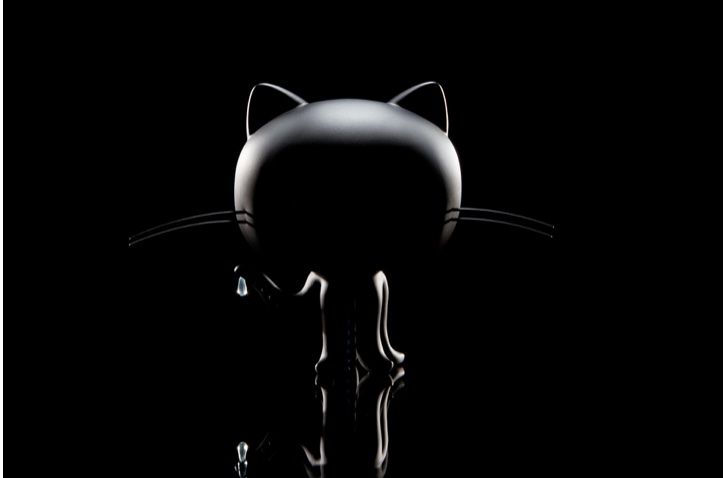

All About Github
Q. What is a version control system?
A. It is a software tool that is able to track and manage changes made to files over time.
Q. What is Git?
A. Git is a free version control system that helps developers track and manage any change to their own codes or projects.
Q. What is GitHub?
A. GitHub is a web-based platform that allows developers to store/share/collaborate on codes.
Q. What is the different between Git and GitHub?
A. Git is a version control system, while GitHub is a web-based hosting server.
Q. Who started Github and how was it started?
A. The service was developed by Chris Wanstrath, Hyett, Tom Preston-Werner, and Scott Chacon. They started this server using Ruby on Rails.
Q. What company owns it now?
A. It is now a subsidiary of Microsoft Corp.
Q. How much does a GitHub account cost?
A. GitHub is free unless you would like the Pro or Team version.
Q. What is the octocat?
A. It is the mascot for GitHub
Git/Github terms
Repository is a place wher eyou can store your codes or files and the revisions of each file.
Commit is what records the changes to the files in your branch.
Fork goes with the Repository, it is a new repository but it shares codes and visibility with the orginal repository.
Push is how you transfer commits from your local repository to a remote repository.
Pull Requests is a proposal to merge a set of changes from one branch to another.
Workflows is a configurable automated process that will run jobs.
Issues is able to track bug reports, new features, anything else you need to write down or discuss.
Raw Button mean you can view or copy the raw content of a file without any styling.
Blame Button is used to examine the contents of a file line by line and see when each line was last modified.
- 